Come preparare un testo scientifico
Maurizio Tomasi (maurizio.tomasi@unimi.it)
22 Aprile 2022
Articoli scientifici
Cos’è un articolo?
- Descrizione di un risultato scientifico, solido ed innovativo.
- Solitamente pubblicato su riviste peer reviewed, proceedings o monografie.
- Da due pagine fino a qualche decina (rari sopra le 100 pagine).
- A volte accompagnano una presentazione (proceedings).
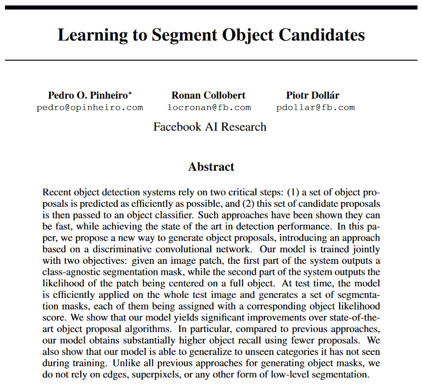
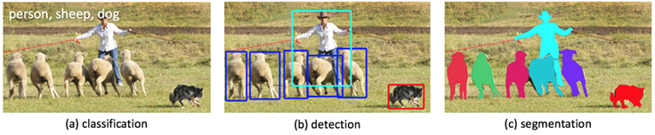
Esempi di riviste astronomiche
Quando scrivere un articolo?
- Vedi l’articolo What makes a good research proposal?, è applicabile anche qui.
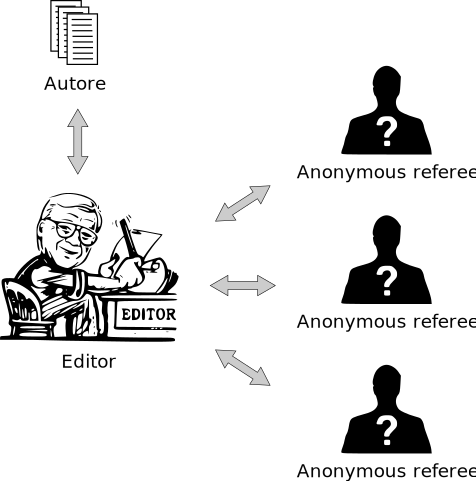
La parola finale è quella dell’editor!
Preprint
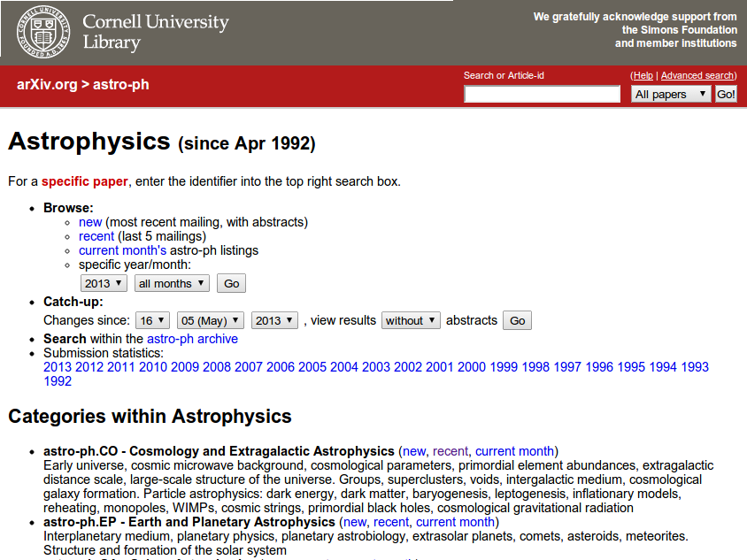
Mailing list
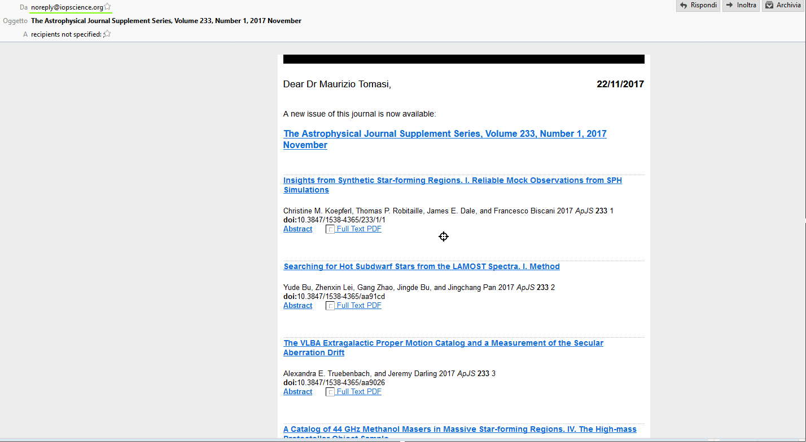
Le parti più importanti
Nessuno inizia a leggere il testo di un articolo senza prima aver almeno dato un’occhiata a:
- Titolo;
- Abstract;
- Grafici e tabelle;
- Introduzione e conclusioni.
Sono quindi le parti da curare maggiormente! (Alcuni consigliano anzi di iniziare a preparare queste)
Scelta del titolo
Il titolo deve chiarire nel migliore modo possibile l’argomento del lavoro
È possibile scegliere un titolo simpatico che «catturi» l’attenzione:
Life in the fast lane: a direct view of the dynamics, formation, and evolution of the Milky Way’s bar (MNRAS, 2019)
When a Period Is Not a Full Stop: Light Curve Structure Reveals Fundamental Parameters of Cepheid and RR Lyrae Stars (MNRAS, 2020)
Notate però che in entrambi i casi si precisi di cosa si parla!
Abstract troppo astratto!
In questo lavoro vengono presentati le interessanti proprietà di una particolare classe di operatori sugli spazi di Hilbert. La loro invarianza rispetto a certe trasformazioni mostra l’esistenza di interessanti proprietà simmetriche. Vengono anche mostrate interessanti applicazioni in alcuni domini della fisica.
(Van Leunen, A handbook for scholars)
Esempio da seguire
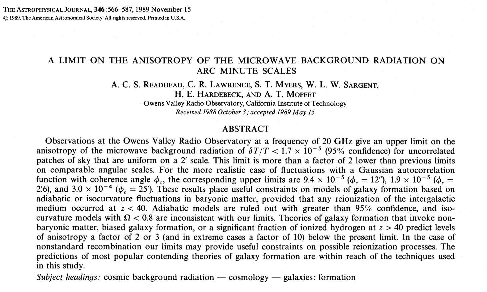
Andare diretti al punto!

Evitare la forma impersonale/passiva
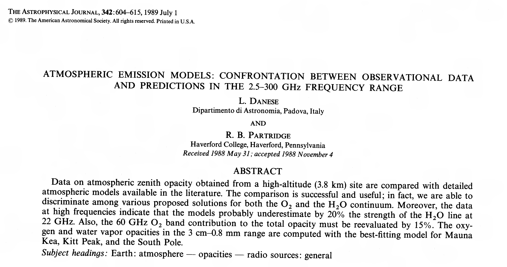
Esempio di introduzione
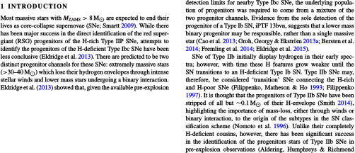
Esempio da seguire
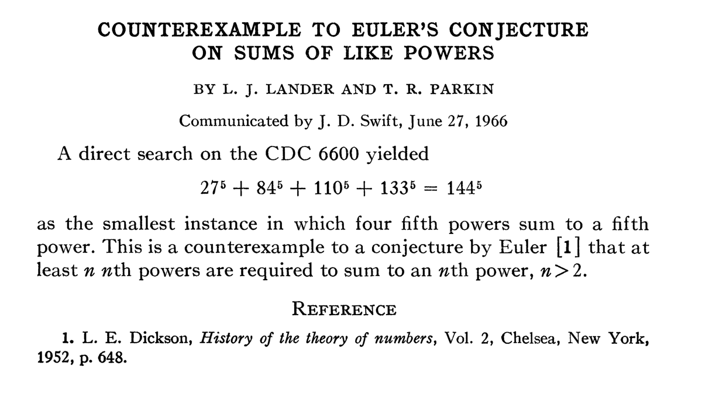
Lista degli autori
È sempre più vero che in astronomia si lavora in grandi collaborazioni.
Quando pubblicate, includete nella lista degli autori tutte quelle persone che:
- Hanno fornito un contributo, ma solo se questo consiste in qualcosa di originale, creativo, e scientificamente valido;
- Vi hanno dato il loro consenso esplicito.
Lista degli autori
Includete negli acknowledgements («ringraziamenti») tutti gli altri: chi vi ha corretto l’inglese, chi vi ha sistemato una figura, l’officina che vi ha costruito un pezzo…
In questa lista ricadono anche eventuali enti finanziatori (e i referee, se i loro commenti hanno aiutato a migliorare l’articolo!).
Bibliografia
- Fondamentale!
- Se usate LaTeX, potete gestire la bibliografia con BibTeX.
- Per ogni lavoro che fate (o tesi!) tenete una lista di articoli letti, ed aggiornatela costantemente.
Gestione delle bibliografie
Scrittura del testo
- Evitare errori di sintassi («un pò», «invecie», «perchè», «daccordo»…);
- Se scrivete in inglese, attenzione agli «italicismi» («we propose in this paper a method…»).
Grafici da non imitare!
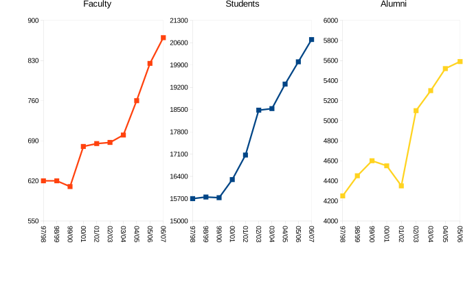
Grafici da non imitare!
Il grafico precedente ha più problemi:
- Gli assi Y non sono omogenei: il grafico degli alumni (laureati) mostra le differenze con l’anno precedente!
- L’asse delle X non è omogeneo!
Grafici da non imitare!
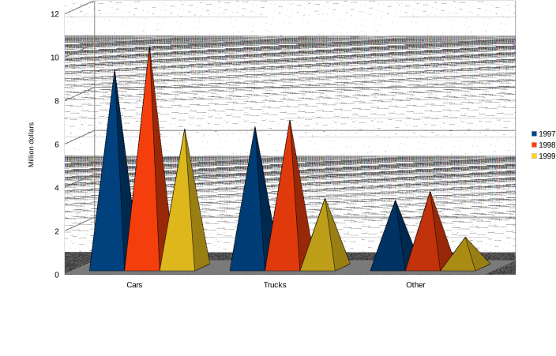
Grafici da non imitare!
Il grafico precedente ha almeno tre problemi:
- L’uso del 3D è gratuito e fuorviante (il dato sulle automobili del 1998 supera la tacca del 10 oppure no?);
- Il dato del 1999 è limitato al primo semestre!
Grafici da non imitare!
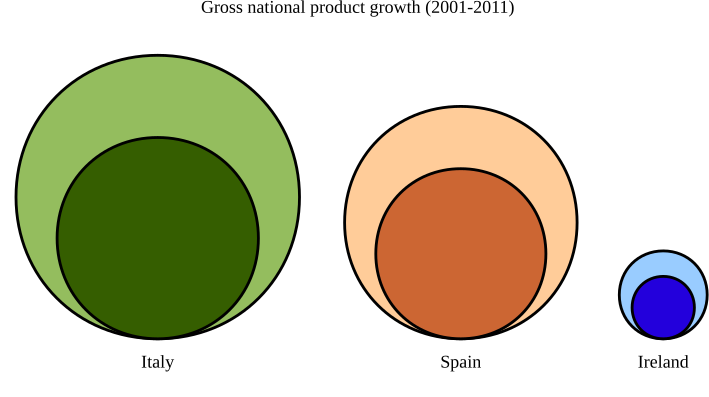
Grafici
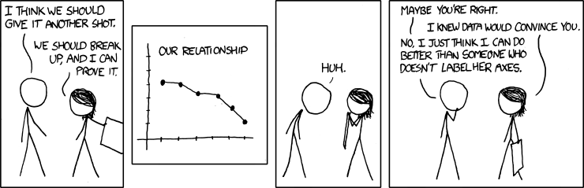
Grafici
http://nautil.us/issue/19/illusions/five-ways-to-lie-with-charts
Strumenti per creare grafici
- GNUplot (programma per creare grafici);
- GNU R (linguaggio di programmazione con ottime capacità di creare grafici: vedi The R Graph Gallery);
- Python+Matplotlib (meglio però usare librerie più sofisticate di Matplotlib, come Seaborn);
- Mathematica (linguaggio di programmazione, a pagamento);
- Inkscape (diagrammi e grafica vettoriale);
- Asymptote (linguaggio di programmazione per la grafica);
- Microsoft Excel, LibreOffice Calc… (yuk!).
Uso dei colori
- L’uso dei colori permette di rendere più chiaro un grafico.
- I colori vanno però scelti oculatamente!
- Attenzione alle persone con disturbi nella percezione del colore (es., daltonici)
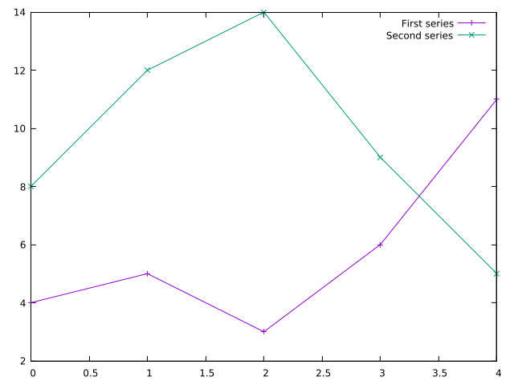
Generazione di schemi di colori
- Colourlovers: https://www.colourlovers.com/
- Colormind (online): http://colormind.io/
- Gpick (solo Linux): https://www.gpick.org/
- Mappe di colore in Julia: https://github.com/peterkovesi/PerceptualColourMaps.jl
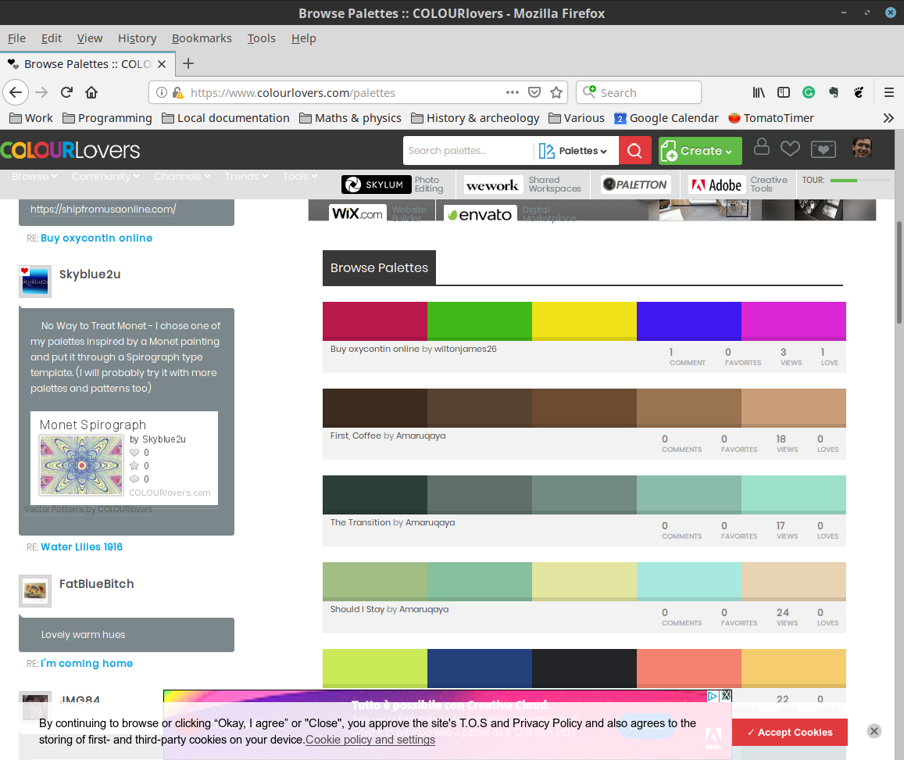
Mappe di colore percettive
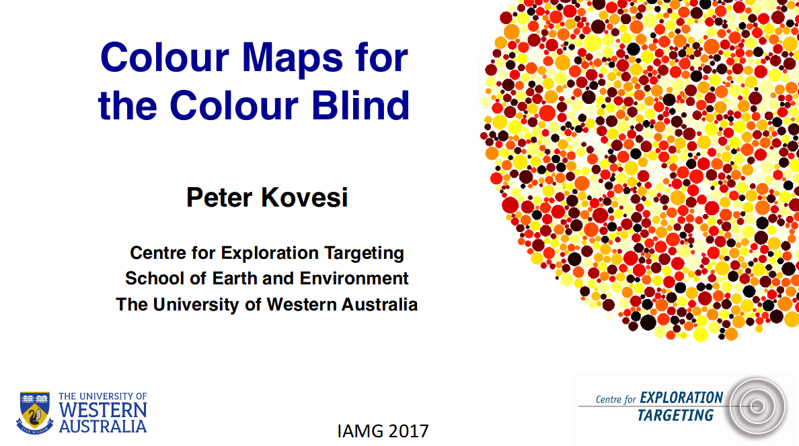
Slides: https://peterkovesi.com/papers/ColourMapsForColourBlindIAMG2017.pdf, vedi anche Good colour maps: How to design them
Tesi di laurea e dottorato
Passi per scrivere una tesi
- Decidere la lista dei capitoli.
- Per ogni capitolo, decidere la lista delle sezioni (argomenti).
- Scegliere quali grafici e tabelle includere.
- Scrivere il testo.
Cose da non fare
- Iniziare subito a scrivere il testo suddiviso in capitoli;
- Usare parole inutili: «essenzialmente», «prettamente», «sostanzialmente»…
- Essere vaghi (evitare «grande», «piccolo», «trascurabile» senza quantificare);
- Usare troppa enfasi letteraria;
- Mentire/nascondere dati.
Esempio (accaduto realmente!)
«In questa tesi ho svolto un’analisi di tipo prettamente statistico…»
«Perché dici “prettamente”?»
«In questa tesi ho svolto un’analisi di tipo statistico…»
«Perché dici `di tipo’?»
«In questa tesi ho svolto un’analisi statistica…»
Uso del passivo e dell’impersonale
- Si possono usare, ma solo se necessario;
- Impediscono di capire chi abbia fatto cosa;
- «È stata calcolata la mediana» → «Ho calcolato…»;
- «Si è considerata qui solo la prima serie di dati» → «Ho considerato…».
Esempio
I procured a triangular glass prism, to try therewith the celebrated phenomena of colours. And for that purpose, having darkened my laboratory, and made a small hole in my window shade, to let in a convenient quantity of the sun’s light, I placed my prism at the entrance, that the light might be thereby refracted to the opposite wall…
Newton, «Optiks» (1672)
Si simula ora il rumore bianco generando un vettore di 100000 elementi casuali distribuiti normalmente aventi media nulla e deviazione standard che descresce all’aumentare del conteggio. La deviazione risulta essere 100 000 nel primo elemento del vettore e 1 nell’ultimo elemento. Si applica il procedimento adottato nel paragrafo X.Y sottraendo un elemento del vettore con il successivo.
Ho creato un vettore {x_i}_{i=1}^N, con N=10^5, in cui ciascun elemento x_i è un numero pseudo-casuale distribuito normalmente. La media è sempre nulla (\left<x_i\right> = 0\ \forall i), mentre la deviazione standard risulta essere \sigma^2(x_i) = 10^5/i.

Questa lettera è più lunga delle altre perché non ho avuto agio di farla più breve.
Blaise Pascal, Les Provinciales, XVI
Presentazioni
Quando preparare una presentazione
- Discussione di una tesi;
- Seminario (anche interno al proprio gruppo);
- Partecipazione a una conferenza.
Disclaimer
Quanto si dirà ora non vale per le slide usate in un corso (come quelle che state guardando in questo momento).
Le slide dei corsi sono fatte per essere lette e rilette più volte dagli studenti. Qui si parla invece di slide a supporto di un talk, che di solito non vengono distribuite.
Come preparare una presentazione
- Capire il tipo di uditorio;
- Stabilire il messaggio;
- Decidere gli argomenti;
- Abozzare su carta l’aspetto e l’ordine delle slide;
- Creare le slide al computer;
- Provare a voce alta fino all’esaurimento.
Alcuni consigli
- Evitare di mettere troppi elementi
- Testo sintetico!
- Usare i grafici…;
- … ma solo se significativi;
- Tabelle: quasi mai una buona idea, meglio un grafico.
Alcuni consigli
- Provare molte volte ad alta voce;
- Provare con un uditorio di fronte;
- Non parlare troppo in fretta;
- Parlare a voce alta;
- Guardare negli occhi l’uditorio;
- Fare pause di respiro;
- Non leggere il testo delle slide.

Lancio dello Shuttle Columbia, 12 Aprile 1981
L’incidente (1 Febbraio 2003)
- 82 s dopo il lancio (16 Gennaio) si staccò schiuma isolante;
- Il pezzo fece un buco nell’ala sinistra;
- In fase di rientro l’elevato calore penetrò nel buco distruggendo l’ala.
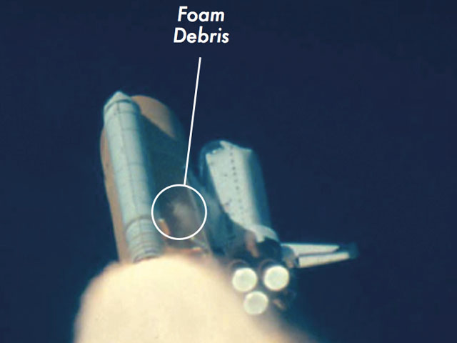
1 Febbraio 2003
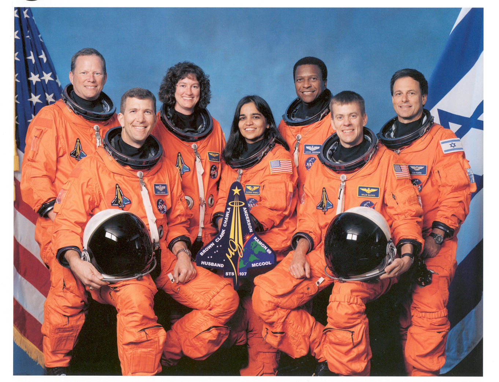
Dettagli sul fatto
- In 4 lanci precedenti si era verificato il distacco di schiuma isolante, ma in nessun caso c’erano state conseguenze;
- Durante la missione, l’equipaggio era stato avvisato del distacco, ma senza presentarlo come un problema significativo (nessuno lo pensava).
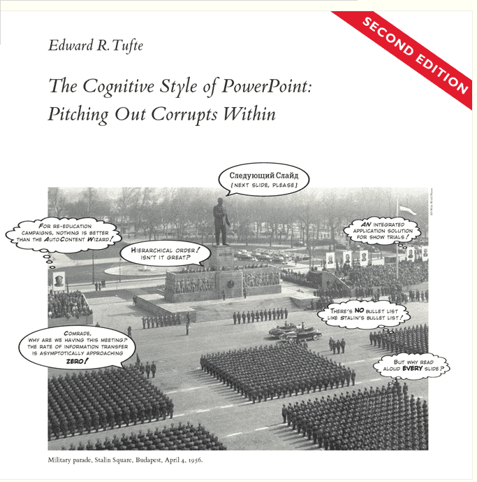
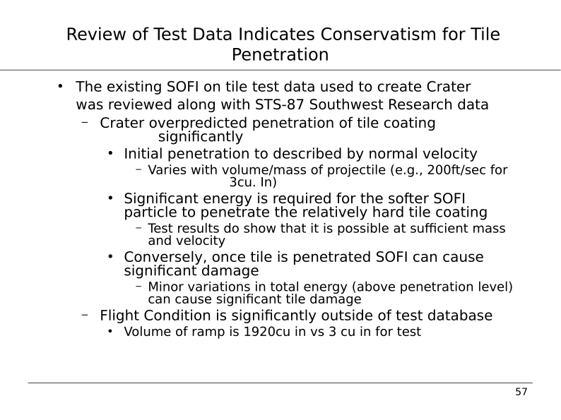
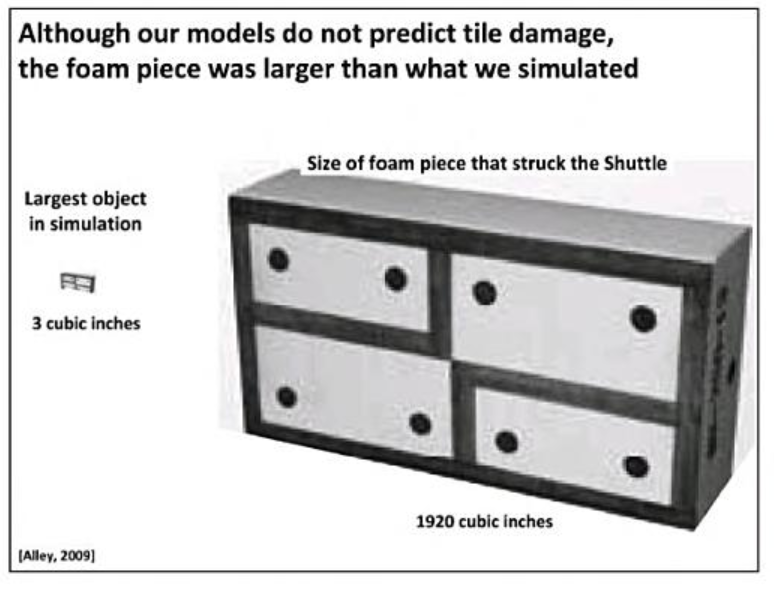
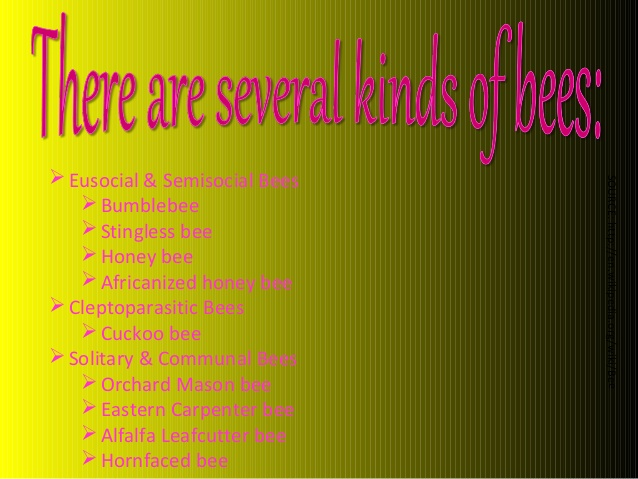
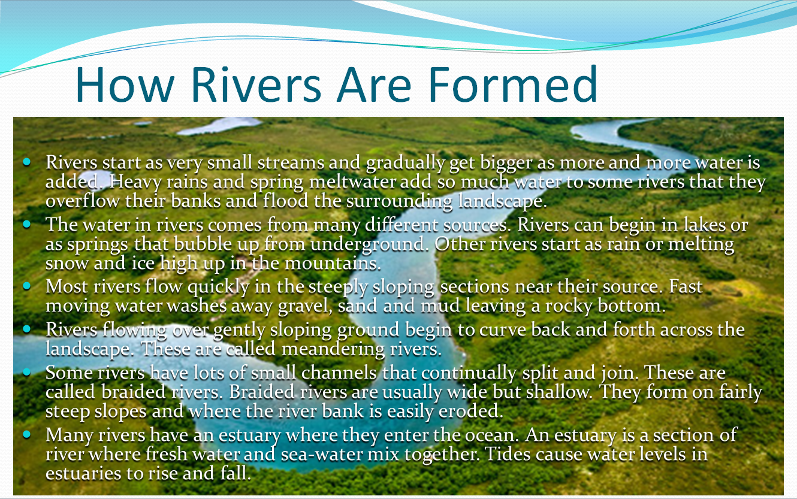
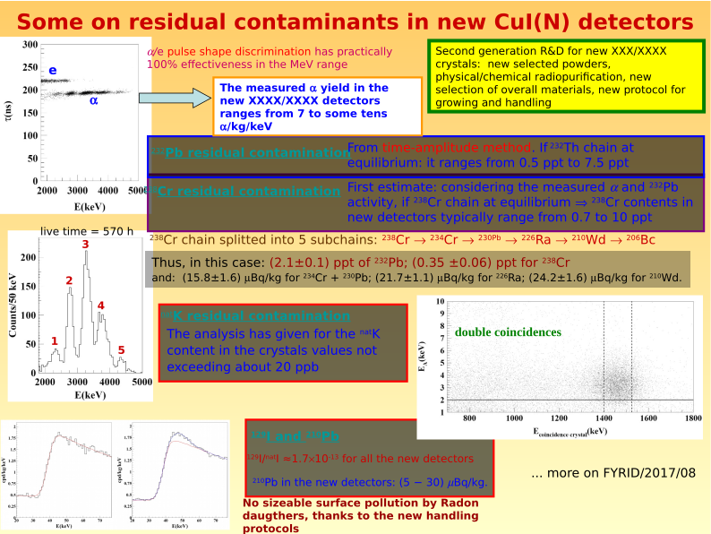